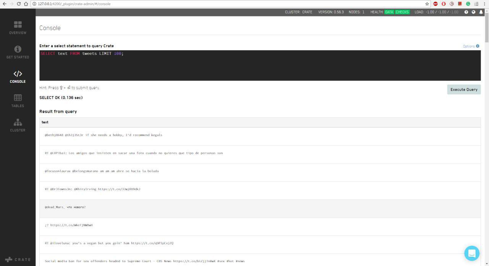
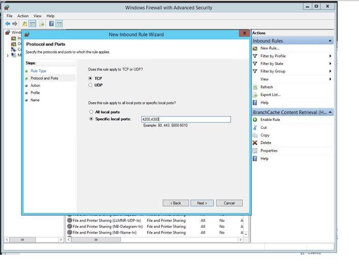

First time with Crate? Learn how to install it on Windows systems, run the Admin UI and execute your first query.
System requirements
Windows 7/8/10 versions are supported.
To install Crate on Windows, you will need a
Java JDK (version 8u111+) installed.
Set the JAVA_HOME environment variable:
Click the image below to switch between steps.
 
Open ...
Download the Crate Tarball, expand it and move to a convenient location.
Start Crate by running .\bin\crate.
Notice: To create a cluster, run the command multiple times.
Crate ships with an Admin UI (link to Admin UI) that provides an overview of your cluster, nodes, tables and much more.
To Connect to Crate Cluster, open the following url:
http://127.0.0.1:4200/admin
Where 127.0.0.1 is a SERVER_IP, the publicly accessible IP address of any node in the Crate cluster, and 4200 is the Crate port.
Get started with sample data
Go to the Get Started tab and proceed with the instructions. As a result you will get a tweets table with the latest posts imported from Twitter. It is accessible in the Tables tab.
Now, lets make some queries from the data.
Go to the Console tab and type
SELECT text FROM tweets LIMIT 100;
Click Execute query.
If the query was written correctly, the operation was successful, and the SELECT OK message will be displayed. The result will be displayed in the field below.
Lets try another example. In this example you will get a total number of obtained tweets as well as the number of users that were verified.
Now you are ready to proceed with Crate. Good luck!